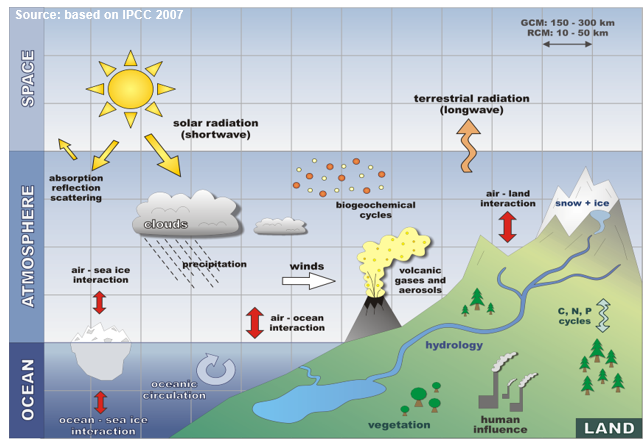
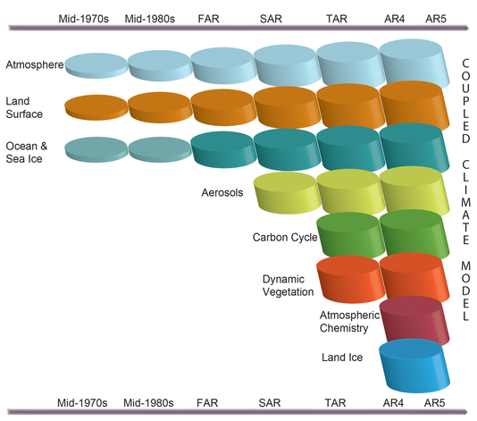
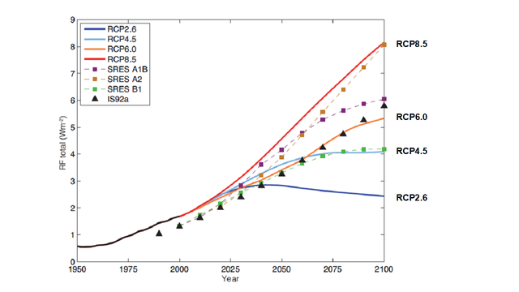
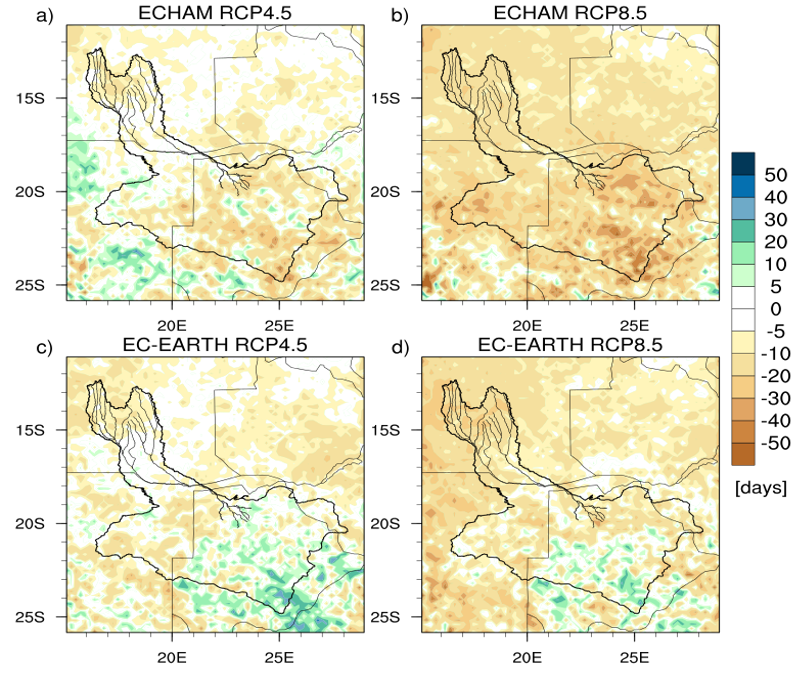

2. Regional climate change assessment and uncertainty analysis¶
2.1. Short course by T. Weber and A. Kriegsmann¶
2.2. Introduction into climate modelling¶
Applied software: Virtual Box, Kubuntu 18.04 (Linux-System), Climate Data Operator (CDO), Python/PyNgl - All software is free!
2.3. Climate modelling¶
2.3.1. 1. Weather vs. Climate¶
2.3.1.1. Definition:¶
Weather Physical state of the Atmosphere at a certain place and time. It can be characterised by meteorological parameters, e.g. air pressure, temperature, humidity, precipitation
Climate Climate, sometimes understood as the “average weather,” is defined as the measurement of the mean and variability of relevant quantities of certain variables (such as temperature, precipitation or wind) over a period of time, ranging from months to thousands or millions of years (Classical time period 30 years) (Source WMO)
 The Climate System
2.3.2. 2. Climate Variablility¶
- Climate Change: Statistically significant change persisting over a long time period *
- Variations of climate at all temporal and spatial scales (which are beyond single weather events); due to internal feedbacks within the climate system and due to external forcings *
- internal Climate Variability
- Non-linear processes in the climate system and feedbacks between its components, e.g. between ocean and atmosphere (ENSO, NAO)
- External Climate Variability
- Natural forcing: Anthropogenic Climate Change e.g. solar variability, earth rotation, earth declination, earth orbital parameters, natural composition of the atmosphere, volcanic eruptions, continental drift
- Human Forcing: Anthropogenic Climate Change Emissions of greenhouse gases and aerosols to the atmosphere Land use change, e.g. deforestation
2.3.3. 3. Impact of Natural and Anthropogenic Forcing¶
Climate models can only reproduce the observed spatial and temporal
patterns of warming when they include natural AND anthropogenic forcings
 Natural and anthropogentic forcings
Natural and anthropogentic forcings
2.3.4. 4. Key Questions about the climate system and its relation to human kind¶
Fig. 2.1 Questions¶
2.3.5. 5. Climate Modelling¶
Climate models are the most sophisticated approach to simulate the Earth System. This involves the description of the major processes occurring
- in the atmosphere (both physical and chemical processes),
- in the oceans (both physical and chemical processes)
- on the land surface (vegetation, biogeochemistry)
- AND the simulations of the interactions between the different systems as well as human interference into the system
The growth of computer power, plus of our knowledge of planetary systems, has allowed these models to become increasingly powerful. There are several limitations in climate modeling:
- Availability of data/information to understand and describe the processes e.g. processes in the deep ocean, but also for processes over land
- Constraints in computational capacity Atmospheric variables at each grid point requires the storage, retrieval, recalculation and re-storage of 105 figures at every time-step
- Models contain thousands of grid points
- GCMs are computationally expensive

2.3.5.2. 5.2 The major challenge¶
Climate models must simulate many physical processes across a wide range
of spatial and temporal scales.  Major challenges
Major challenges
2.3.5.3. 5.3 Climate Model Development (IPCC AR5, WG1, Chapter 1)¶
 Development of GCMs

2.3.5.5. 5.5 Multi-Emission Scenarios¶
Anthropogenic radiative forcing in Representative Concentration Pathways (RCPs) and former Special Report on Emissions Scenarios (SRES) 
2.3.5.6. 5.6 Which model approach for which purpose?¶
- Studies on global to continental climate change, global to
continental carbon cycle, etc.
- Global models
- Studies on continental to regional climate change and impact assessment
- Global and regional models
- Studies on national climate change and impact assessment
- Regional models (both dynamical and statistical)
- Subnational to local climate change assessment
- Mainly statistical approaches to link regional synoptic patterns with local station data
2.3.5.8. 5.8 Dynamical Downscaling¶
How to derive the climate change signal?
1) Validation of the Era-Interim forced run
2) Calculate the climate change signal
Fig. 2.5 CCS¶
2.3.5.8.1. EXAMPLE:¶
Dynamical Downscaling
Projected changes by the regional model REMO for the duration of the rainy season [days] for 2071-2100 compared to 1971-2000.
 The upper row shows the ECHAM6 and the bottom row the EC-EARTH forcing. Emission scenarios are represented by different columns.
- The regional climate model produces different results with different global model forcings!
- This issue can be handled with a multi-model ensemble analysis.
2.4. Summary of Climate modelling¶
- Climate models deliver a valuable tool for assessment of potential future climate change
- Climate models are the only tool available for making projections including all the potential feedbacks between the systems
- One has to know how to interpret the data of climate models and one has to be careful to not over interpret
- Climate models are suspect to uncertainty
- Never rely a decision on the output of a single model or emission scenario